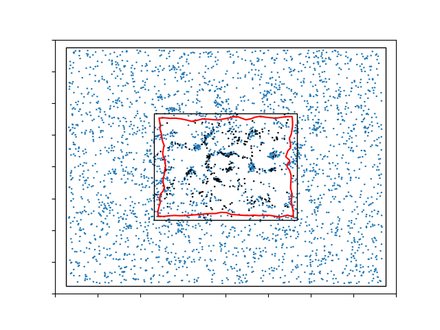
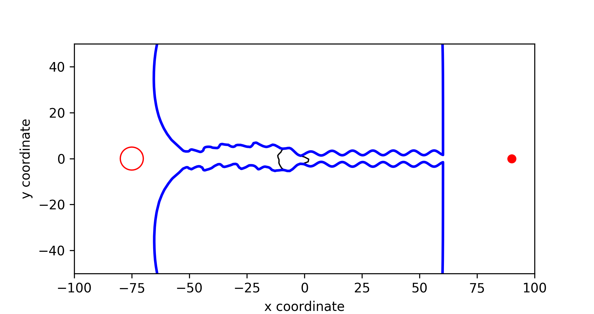
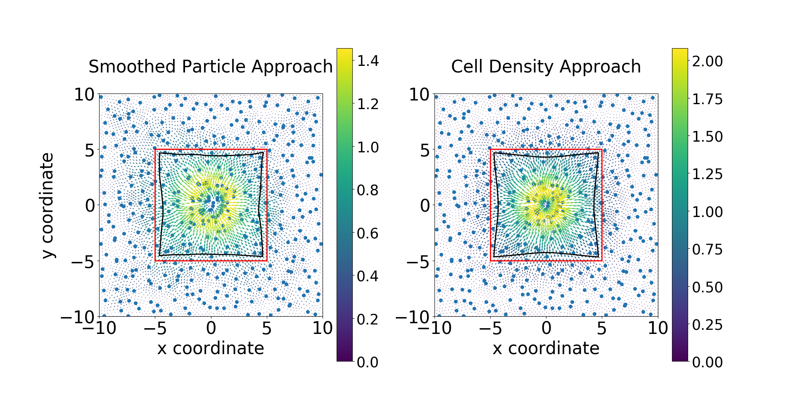
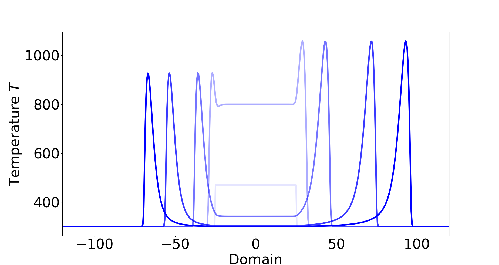

Metastability of planar waves in stochastic reaction-diffusion systems
We have established the metastability of planar travelling waves in stochastic reaction–diffusion systems propagating on either a cylindrical domain or the whole space. We show that these patterns persist, with (exponentially) high probability, on timescales that are exponentially long with respect to the inverse of the noise strength. We do so by tracking the wave. local, global. also what is speed in both cases.
TEXT Click here for the directory about this topic, including videos, images, and the corresponding papers.

Invariant probability measures for population dynamics models with noise.
Stochatic versions of the celebrated Mackey--Glass equations, Nicholson blowflies equation, and Wright's equation.
TEXT Click here for the directory about this topic, including videos, images, and the corresponding papers.

Pyragas control
To model the forces exerted by the (myo)fibroblasts in the wound healing model, point forces are described by Dirac Delta distributions and superposition theory. However, for the dimensionality higher than one, the solution to the momentum balance equation is not in the same Hilbert space that classical finite element techniques aim at. To improve the accuracy of the solution, we came up with several alternatives which have been proven consistent with the immersed boundary approach analytically and numerically.
Furthermore, we are interested in upscaling the agent-based model to the continuum-based model regarding the momentum equilibrium equation. The consistency has been proven analytically in one dimension and numerically in both one and two dimensions with finite-element methods.
TEXT Click here for the directory about this topic, including videos, images, and the corresponding papers.

Evolution of Microbubbles with Focused Ultrasound in Drug Delivery in Brain
The brain-blood barrier (BBB) is the major barrier protecting the brain, which consists of endothelial cells that are connected by tight junctions between the neighboring cells. This BBB limits the transport of drugs from the blood into the brain. To increase the permeability of the BBB and hence drug delivery into the brain, applying a combination of microbubbles (MBs) and focused ultrasound (FUS) shows a great potential. In this process, the MBs start to oscillate due to the FUS and “massage” the membrane of endothelial cells resulting in small, temporary openings in the endothelial cell membrane and in between the cells. Most modelling work on MBs revealed relations between the radius of the MBs and the pressure from the FUS, by treating the MBs as a spherical object where the movement of the MB is neglected.

Travelling Wave in Wildfire Propogation
In this work, we study the propagation of wildfires using an advection–diffusion–reaction model which also includes convective and radiative heat loss. The existence of travelling waves (TWs) in the one-dimensional case is investigated. Prior numerical studies reveal the existence of TWs. Under the travelling wave ansatz and certain approximation, the model is reduced to a semi-autonomous dynamical system with three unknowns which can be analyzed by a shooting algorithm. It is hypothesized that under mild wind speeds, TWs in both directions exist, and under strong tailwinds only TWs in the direction of wind are possible. The theoretical implications are investigated using both solvers for the PDE models and the shooting algorithm. The results match, and unveil the dependence of the fronts on the parameters consistent with the predictions.


{kind=link}
{kind=link}
{kind=link}
{kind=link}